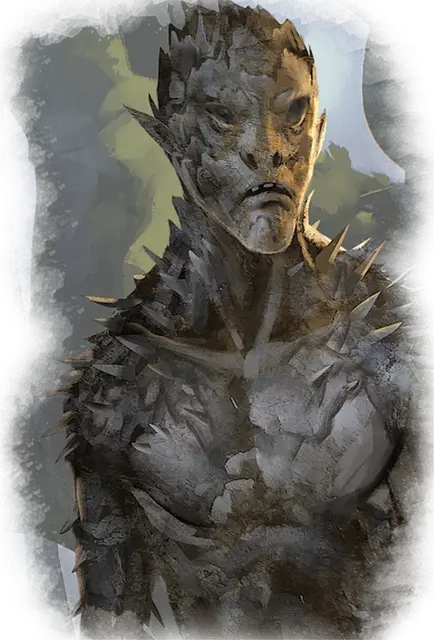

Игольчатая зараза
Needle Blight
Среднее Растение, нейтрально-злое

Класс Доспеха 12 (природный доспех)
Хиты 11 (2к8 + 2)
Скорость 30 футов
| мод | спас | ||
|---|---|---|---|
| СИЛ | 12 | +1 | +1 |
| ЛОВ | 12 | +1 | +1 |
| ТЕЛ | 13 | +1 | +1 |
| мод | спас | ||
|---|---|---|---|
| ИНТ | 4 | −3 | −3 |
| МДР | 8 | −1 | −1 |
| ХАР | 3 | −4 | −4 |
Иммунитет к состояниям ослепление, глухота
Чувства слепое зрение 60 футов (слеп за пределами этого радиуса), пассивное Восприятие 9
Языки Общий
Опасность 1/4 (50 опыта)
Бонус мастерства +2
Среда обитания Лес
Особенности
Языки. понимает Общий, но не говорит.
Действия
Когти. Рукопашная атака оружием: +3 к попаданию, досягаемость 5 футов, одна цель. Попадание: Колющий урон 6 (2к4 + 1).
Иглы. Дальнобойная атака оружием: +3 к попаданию, дистанция 30/60 футов, одна цель. Попадание: Колющий урон 8 (2к6 + 1).
Описание
В тени леса игольчатая зараза издалека может быть принята за сгорбившегося гуманоида, передвигающегося шаркающей походкой. Вблизи же эти существа выглядят как ужасные растения, чьи иглы растут по всему телу. Игольчатая зараза выбрасывает эти иглы в стороны или запускает их как стрелы, которые пробивают доспех и плоть.
Когда игольчатая зараза обнаруживает угрозу, она выбрасывает пыльцу, которая с ветром передвигается к другим сородичам по всему лесу. Предупрежденные о местонахождении своих врагов, игольчатые заразы сходятся со всех сторон, чтобы омыть свои корни кровью.
См. дополнительно статью: "Бестиарий: Заразы"